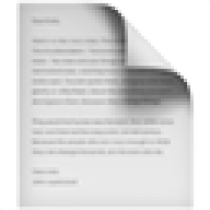
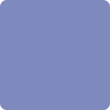
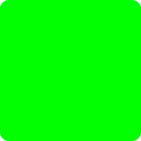
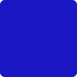

Build specifics
This project was created by Karolina Dubiel for Impact Hacks '23 (11/10 - 11/12)
Click to skip to technical details 👇
Submission Details
Submission Track: Healthy People & Planet SDG 11: Sustainable Cities and Communities &
15: Life
on Land
SDG 11: Sustainable Cities and Communities &
15: Life
on Land
Submitted to Challenge: Umi Feeds Challenge
Submission type: Interdisciplinary (paper + tech solution)
View the policy paperView the demo video
This submission takes on a novel "square zero" approach to the idea of
creating city
green space:
we can't create effective
green
space unless both
the public and businesses understand
the dire need for their creation.
Aside from the negative impact on the mental and physical health of citizens, one of the
top
consequences of lack of green space is increased
particle pollution. As particle pollution isn't usually visible to humans, it's easy to
pretend
that it doesn't exist, and therefore, enables
citizens to ignore the problem or be less inclined to support public policy initiatives
to create
more green space.
Pollutant information
Information via epa.gov:
O3: Ozone is both natural and man-made and has both beneficial and adverse affects on human health. In the atmosphere, it shields humans from harmful UV exposure, but when inhaled, it undergoes dangerous chemical reactions with molecules in the respiratory tract.
SO2: sulfur dioxide is primarily emitted through fossil fuel combustion. Increased sulfur dioxide concentration leads to increase particulate matter (PM) pollution.
PM2.5: PM2.5 refers to a class of ultra-fine particulate pollutants, with diameters under 2.5 micrometers.
PM10: PM10 refers to a class of ultra-fine particulate pollutants, with diameters under 10 micrometers.
NH3: Ammonia is a toxicant that typically arises from waste. Large amounts of ammonia can lead to decreased respiratory function, reduction of Na+ to potentially fatal levels, and disruption of blood vessels.
Green Spaces and Pollutants
Cities with the most green spaces strongly overlap with cities with lowest particle pollution (data from tpl.org):
Singapore and Zurich:
both of these cities top global green space statistics, with close to or over 50% of parks and gardens being public green space.
Dubai and Shanghai:
both of these cities have less than 2% public green space, and much higher pollution rates than Singapore and Zurich, despite having lower population densities than Singapore and Zurich, respectively.
Technical Details
This project was primarily built using the Particle.JS library by Vincent Garreau and the OpenWeatherMapAPI.
http://api.openweathermap.org/geo/1.0/direct?q=${cityName}&limit=1&appid=${apiKey}
https://api.openweathermap.org/data/2.5/air_pollution?lat=${latitude}&lon=${longitude}&appid=${apiKey}
updateParticleLabel() loads the
number of
each particle present in 1 cubic meter of air.generateColorArray method is
called.
This method creates an array of 50 hex codes, each corresponding to one of the 5 colors representing
particle pollutants.- Using the total number of particles, the percent of each particle out of the total pollutants is determined and rounded to the nearest integer. Based on this data, the array is populated so that the percent of each element determines the number of elements with the corresponding hex code (for example, if pm2.5 is 4% of total pollution, 2 elements will have the pm2.5 hex value).
<- Return to main